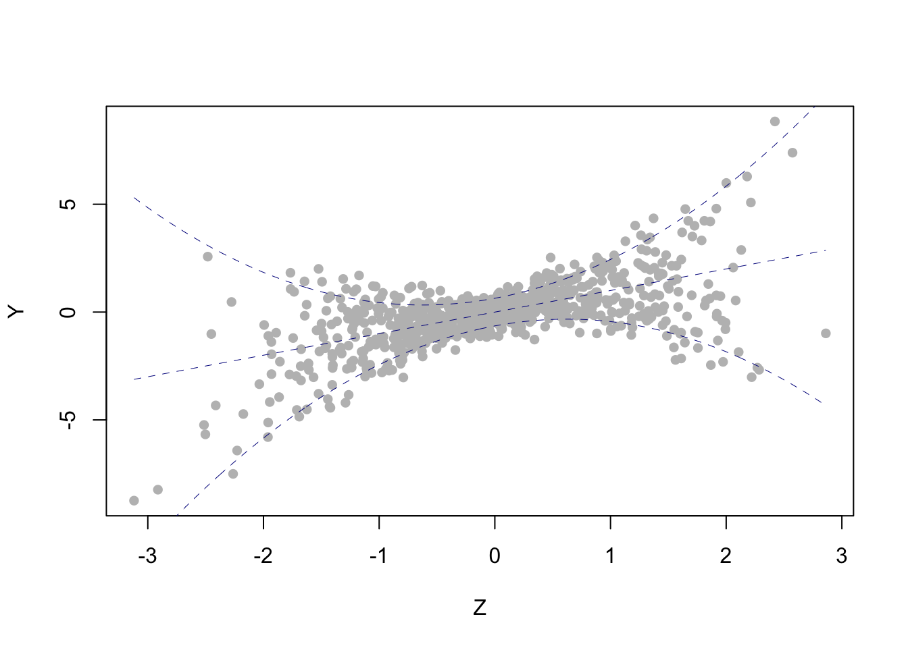

4.1 Drawbacks
Flexibility comes at a cost, however. When we write equation (4.1), we are implicitly restricting either the functional form of \(\beta,\) or the support of \(X,\) or both, because the map \(\tau\mapsto Q_{Y|X}(\tau|x)\) is non-decreasing and left-continuous, for all \(x\in\mathscr{X}.\) In this section I’ll discuss some of these restrictions; for conciseness, I will not repeat at every turn that \(Y\) is a scalar random variable, that \(X\) is a \({\mathrm{D}_X}\)-dimensional random vector, and that \(Y\) and \(X\) are related by \[\begin{equation} Q_{Y|X}(\tau|x) = x'\beta(\tau),\qquad \tau\in(0,1),\,x\in\mathscr{X}. \tag{4.3} \end{equation}\] This is our working assumption.
The first issue, illustrated in the example below, is called quantile crossing, which we couldn’t explain better than Koenker (2005) already has:
The virtues of independently estimating a family of conditional quantile functions can sometimes be a source of serious embarrassment when we find that estimated quantile functions cross, thus violating the basic principle that distribution functions and their associated inverse functions should be monotone increasing. […] It is of some comfort to recognize that such crossing is typically confined to outlying regions of the design space.
Example 4.2 (Quantile crossing) Suppose that \(X = (1\quad X_2)^\prime,\) where \(X_2\) is real valued. If \(\beta_2(\cdot)\) is a non-constant function, then the support of \(X_2\) has a either a lower bound or an upper bound. Thus, if \(X_2\) is an unbounded random variable, it is necessarily the case that \(\beta_2(\cdot)\) is a constant function.
Indeed, if the coefficient \(\beta_2\) is not constant-in-\(\tau,\) then there exist two distinct quantile levels \(\tau<\varsigma\in(0,1)\) such that either \(\beta_2(\tau)<\beta_2(\varsigma)\) or \(\beta_2(\tau)>\beta_2(\varsigma).\) In any case, if \(\operatorname{support}(X_2)\) were unbounded from above and below, then it would be possible to find an \(x_2\in\operatorname{support}(X_2)\) such that, for \(x = (1\quad x_2)^\prime,\) one would have \(Q_Y(\tau|x)>Q_Y(\varsigma|x)\) which is forbidden since \(\tau\mapsto Q_Y(\tau|z)\) is non-decreasing.
This example easily generalizes to the scenario where \(X\) is of dimension \({\mathrm{D}_X}> 2\): if a covariate is unbounded and can “move freely,” independently of the remaining regressors, then it must have a constant-in-\(\tau\) coefficient. Notice, however, that this restriction does not necessarily apply: indeed, equation (4.3) can hold exactly (no crossing), provided there is “sufficient dependence” between the covariates, even if they are unbounded. As an example, take \(X = (1\quad Z\quad Z^2)^\prime\) with \(Z\) standard normal (so \(\operatorname{support}(Z)=\mathbb{R}\)) and \[ \beta(\tau) = \begin{pmatrix} \tfrac12Q_Z(\tau) \\ 1\\ 2\tau-1\end{pmatrix} \] for all \(\tau\in(0,1).\) Below is a scatterplot of simulated data from this model. The dashed blue lines correspond (from bottom to top) to the conditional 1st decile, median, and 9th decile.
For more about quantile crossing, see section 2.5 in Koenker (2005).
n = 800
Q = function(tau,z) 1*qnorm(tau)/2 + 1*z + (2*tau-1)*(z)^(2)
Z = rnorm(n)
U = runif(n)
Y = Q(U,Z)
plot(Y~Z, pch=16, col="gray")
zgrid = seq(from=min(Z), to=max(Z), length=n)
for (tau in c(.1,.5,.9)){
lines(zgrid, Q(tau,zgrid), lty="dashed", col="DarkBlue", lwd=.5)
}
Example 4.3 (Sign restrictions) Assume that \(X\) is of dimension \({\mathrm{D}_X}=2\) and that \(X_1\) and \(X_2\) are non-degenerate (there’s no intercept). Suppose further that there are two distinct points \(\widehat{x}, \tilde{x}\in \mathscr{X}\) with \(\operatorname{sign}(\widehat{x}_1)\ne\operatorname{sign}(\tilde{x}_1)\) and \(\widehat{x}_2=\tilde{x}_2=0.\) Then necessarily \(\beta_1\) is constant-in-\(\tau\): indeed, in this case the functions \(\tau\mapsto \beta_1(\tau)\hat{x}_1\) and \(\tau\mapsto\beta_1(\tau)\tilde{x}_1\) are both non-decreasing (being conditional quantile functions) and thus \[ \tau\mapsto\mathrm{sign}(\hat{z}_1)\beta_1(\tau)\qquad\text{and}\qquad\tau\mapsto\mathrm{sign}(\tilde{z}_1)\beta_1(\tau) \] are both non-decreasing functions, which can only happen if \(\beta_1\) is constant-in-\(\tau.\) This example can be generalized to the case \({\mathrm{D}_X}>2.\)
Example 4.4 (Classical linear regression) Let \(Z\) be a scalar Gaussian random variable with \(\mathbf{E}(Z)=\mu\) and \(\operatorname{Var}(Z)=\sigma_X^2.\) Assume \[ Y = a + bZ + U \] for some real constants \(a\) and \(b\) and some random variable \(U\sim N(0,\sigma^2)\) independent of \(Z.\) Then \[ Q_{Y|Z}(\tau|z) = a+bz+Q_U(\tau) \] for all \(\tau\in(0,1)\) and \(z\in\mathbb{R}\) (check!), which yields the quantile regression model (4.3) with \(X = (1\quad Z)^\prime,\) \(\beta_1(\cdot) = a + Q_U(\cdot)\) and \(\beta_2(\cdot) = b.\) Here there is no crossing, as the coefficient \(\beta_2\) is a constant function.
Example 4.5 Let \(Z\) be a non-negative scalar random variable and assume the polynomial \(h(z) = 1 + \gamma_1 z + \cdots + \gamma_q z^q,\) \(z\ge0,\) is non-decreasing. Let \(U\) be independent of \(Z\) and assume \[ Y = a + bZ + h(Z)U \] for some real constants \(a\) and \(b.\) Then \[ Q_{Y|Z}(\tau|z) = a + bz + h(z)Q_U(\tau) \] for all \(\tau\in(0,1)\) and \(z\in\operatorname{support}(Z).\) Therefore, writing \(X = (1 \quad Z \quad \cdots\quad Z^q)^\prime\) yields the quantile regression model (4.3) with \(\beta_1(\cdot) = a + Q_U(\cdot),\) \(\beta_1(\cdot) = b + \gamma_1Q_U(\cdot)\) and, for \(d>2,\) \(\beta_d(\cdot) = \gamma_d Q_U(\cdot).\) Here, \(Z\) possibly affects the conditional location and dispertion of \(Y,\) but not the other parameters related to the shape of the conditional distribution. \(\blacksquare\)
In view of the preceding examples, in the quantile regression model (4.3) it is convenient to restrict attention to covariate vectors whose support is not only bounded but also a bounded subset of \(\mathbb{R}^{\mathrm{D}_X}_+:= [0,+\infty)^{\mathrm{D}_X}\). Notice that imposing such restrictions on the covariates may demand a restriction on the response as well, for example if \(Y\) is equal in distribution to some of the regressors (this is the case in stationary time series with an autoregressive component, when \(X\) includes lagged values of the response). These restrictions can be relaxed if we allow ourselves a less stringent approach, assuming for instance that the linear specification does not hold exactly but is rather an approximation of the “true model,” valid in a relevant region of the support of \(X.\) This can be formalized, for example, by requiring that (4.3) holds (exactly or approximately) not for all \(x\in\mathscr{X}\) but only for \(x\in\mathscr{X}_0\) where \(\mathscr{X}_0\subseteq\mathbb{R}^{\mathrm{D}_X}\) is a region with \(\mathbf{P}[X\in\mathscr{X}_0]> 1-\epsilon\) and where \(\epsilon>0\) is a small constant. This “less stringent approach” is convenient when fitting real data, but is unhelpful if one needs to cast a more analytic glance at quantile regression models, or if the aim is to simulate data from (4.3)